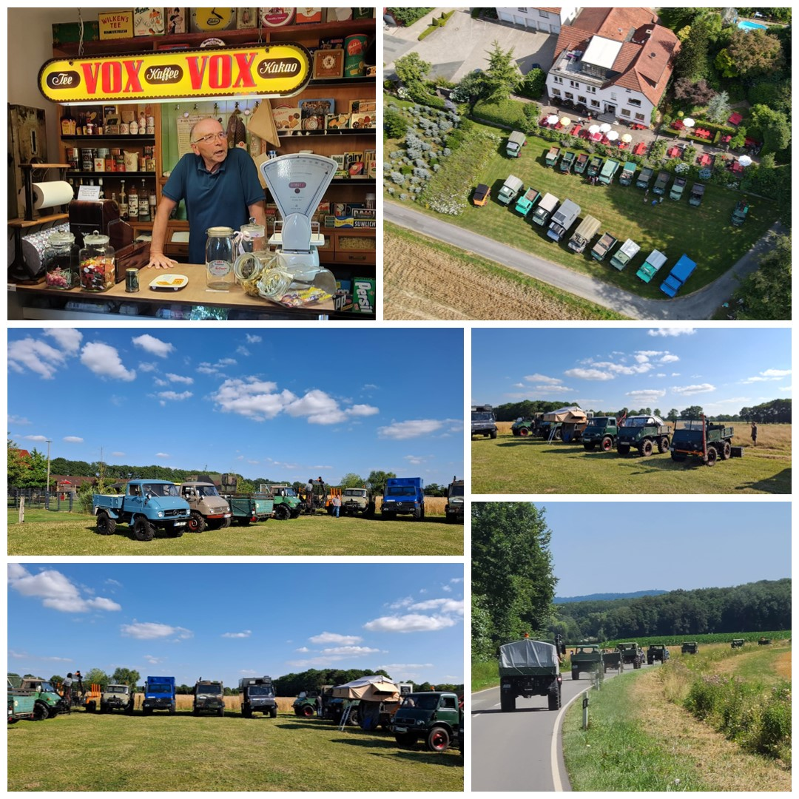

Bei warmem Sommerwetter trafen am Freitag zwischen 15 und 17 Uhr rund 20 Unimogs auf dem Hof Coesfeld ein. Nach der Begrüßung neuer und vertrauter Gesichter startete die erste Ausfahrt gegen 17:30 Uhr.
Die Route führte durch die idyllische Peckelloher Seenplatte weiter nach Versmold zum Heimatmuseum Versmold (heimatverein-versmold.de). Dort erhielten wir eine ausführliche und sehr interessante Führung.
Anschließend ging es zurück zum Hof Coesfeld, wo der Abend wie gewohnt in gemütlicher Runde ausklang – mit gutem Essen, kühlen Getränken und vielen Gesprächen über Technik, Reisen und gemeinsame Erlebnisse.
Nach dem Frühstück startete die große Tagesausfahrt: Rund 30 Unimogs machten sich auf den Weg nach Melle zum Automobilmuseum (automuseum-melle.de). Die Führung war beeindruckend und bot viele spannende Einblicke in die Automobilgeschichte.
Auf dem Rückweg legten wir einen Zwischenstopp in Wellinholzhausen ein, wo wir beim Beutling (bredenstein-gmbh.de) einkehrten. Bei mittlerweile 33 °C war die Pause mehr als willkommen.
Zurück auf dem Hof Coesfeld angekommen, klang der Abend erneut in geselliger Runde aus. Bei leckerem Essen (z.B. sensationelle Steaks vom Wildschwein), kühlen Getränken und vielen Gesprächen über Technik, Reisen und vergangene Treffen wurde es ein langer und sehr schöner Sommerabend.
Am Sonntagmorgen standen noch einzelne gemeinsame Stunden auf dem Hof Coesfeld an. Nach einem gemütlichen Frühstück wurden die Fahrzeuge für die Heimreise vorbereitet. Viele nutzten die Gelegenheit für letzte Gespräche, Fotos und technische Fachsimpelei.
Gegen Mittag löste sich das Treffen langsam auf. Die Rückmeldungen waren durchweg positiv – ein gelungenes Wochenende mit tollen Menschen, beeindruckenden Fahrzeugen und vielen neuen Eindrücken.
